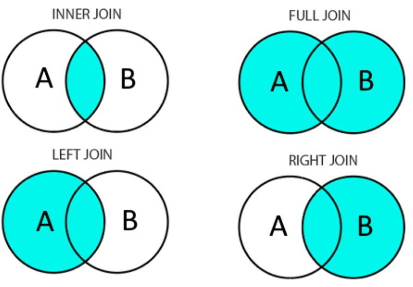

library(tidyverse)3. Análisis
La idea de este apartado es repasar algunas herramientas de estadística descriptiva para realizar análisis de datos. Se utilizará de insumo la Encuesta Nacional de Hogares (EAH) de la Ciudad de Buenos Aires.
La EAH es una encuesta anual por muestreo que se propone recabar datos para conocer y analizar la situación socioeconómica y demográfica de la población y de los hogares de la Ciudad. Si bien lo correcto sería tomar y utilizar el factor de expansión, prescindiremos para facilitar el trabajo sobre la base.
ruta <- "data/encuentro_3/EAH_2023_ind.csv"
columnas <- c("Número de vivienda","Número de hogar","Número de miembro","Comuna","Monto del ingreso per cápita familiar (mes pasado; incluye valores imputados. Se considera sólo miembros que no son servicio doméstico)")
eah <- read_csv(ruta, # seleccionamos archivo
col_select=columnas) # elegimos qué columnas cargar
col_nuevas <- c("num_vivienda","num_hogar","num_individuo","comuna","ingreso_per_capita_familiar")
names(eah) = col_nuevas # renombramos
eah <- eah %>% filter(ingreso_per_capita_familiar > 0) # eliminamos casos sin ingresos
dim(eah)[1] 13000 5head(eah)# A tibble: 6 × 5
num_vivienda num_hogar num_individuo comuna ingreso_per_capita_familiar
<dbl> <dbl> <dbl> <dbl> <dbl>
1 1 1 1 2 140040
2 1 2 1 2 140000
3 1 3 1 2 70000
4 1 4 1 2 70000
5 2 1 1 11 215000
6 2 1 2 11 2150003.1. Pregunta-problema
¿Cómo varía el ingreso en la Ciudad de Buenos Aires por comuna? ¿Cómo se relaciona eso con los resultados electorales de G2023?
3.2. Repasando conceptos básicos
¿Por qué hablamos de muestra? se llama muestra a un subconjunto de una población que es captado para analizar a una población específica. Con población nos referimos al conjunto de todos los elementos que forman parte de un universo de interés.
Existen distintas medidas resumen para sintetizar y describir las características principales de un conjunto de datos. Permiten obtener una visión general y son fundamentales para el análisis exploratorio.
En este apartado vamos a trabajar con la distribución del ingreso familiar per cápita en CABA. Una distribución es simplemente un conjunto de datos determinado; en este caso, una muestra proveniente de la encuesta antedicha.
# al ser más de 13 mil casos, es imposible verlos en formato texto
eah$ingreso_per_capita_familiar[1:10] [1] 140040 140000 70000 70000 215000 215000 70000 268333 268333 268333Para visualizar una gran cantidad de datos podemos usar un tipo de gráfico llamado histograma. Veremos más sobre esto en el siguiente apartado. El eje X representa los valores presentes en la distribución y el eje Y representa la cantidad de apariciones de cada uno de esos valores.
eah %>%
filter(ingreso_per_capita_familiar < 2000000) %>% # filtramos algunos casos para mejorar la visualización
ggplot(aes(ingreso_per_capita_familiar))+
geom_histogram()+
theme_minimal()+
labs(title="Distribución del ingreso per cápita familiar", subtitle="Ciudad de Buenos Aires")El primer conjunto de medidas resumen que veremos son las medidas de tendencia central.
- Media: más conocida como promedio. Es la suma de todos los valores dividida la cantidad de valores. Su sensibilidad a los valores atípicos la vuelve poco representativa en ciertas distribuciones.
Mediana: se obtiene ordenando todos los valores de menor a mayor y tomando el valor que se encuentra justo en la mitad. Evita la sensibilidad a valores atípicos.
Moda: es la observación con mayor frecuencia en la distribución. Puede existir más de una.
# guardamos los valores
media <- mean(eah$ingreso_per_capita_familiar)
mediana <- median(eah$ingreso_per_capita_familiar)
# veamos la media
eah %>%
filter(ingreso_per_capita_familiar < 2000000) %>% # filtramos algunos casos para mejorar la visualización
ggplot()+
geom_histogram(aes(ingreso_per_capita_familiar))+
geom_vline(xintercept= media, color="blue", size=1)+
geom_text(aes(x=media+1e5, y=2900, label="Media"), color="blue")+
theme_minimal()+
labs(title="Distribución del ingreso per cápita familiar en CABA", subtitle=paste0("Media: ",round(media,1)))# veamos la mediana
eah %>%
filter(ingreso_per_capita_familiar < 2000000) %>% # filtramos algunos casos para mejorar la visualización
ggplot()+
geom_histogram(aes(ingreso_per_capita_familiar))+
geom_vline(xintercept= media, color="blue", size=1, alpha=.5)+
geom_vline(xintercept= mediana, color="red", size=1)+
geom_text(aes(x=media+1e5, y=2900, label="Media"), color="blue")+
geom_text(aes(x=media+4e4, y=2700, label="Mediana"), color="red")+
theme_minimal()+
labs(title="Distribución del ingreso per cápita familiar en CABA", subtitle=paste0("Mediana: ",round(mediana,1)))
El segundo conjunto de medidas resumen que veremos son las medidas de variabilidad.
- Varianza: es la media de las desviaciones cuadráticas respecto de la media. Se elevan al cuadrado para evitar la compensación entre números positivos y negativos.

- Desvío estándar: es la raíz cuadrada de la varianza; se utiliza para hacer interpretable la métrica.
# guardamos los valores
sd <- sd(eah$ingreso_per_capita_familiar)
# veamos la media
eah %>%
filter(ingreso_per_capita_familiar < 2000000) %>% # filtramos algunos casos para mejorar la visualización
ggplot()+
geom_histogram(aes(ingreso_per_capita_familiar))+
geom_vline(xintercept= media, color="blue", size=1)+
geom_vline(xintercept= media-sd, color="violet", size=1, linetype = "dashed")+
geom_vline(xintercept= media+sd, color="violet", size=1, linetype = "dashed")+
geom_text(aes(x=media+1e5, y=2900, label="Media"), color="blue")+
geom_text(aes(x=media+sd+3e5, y=2700, label="Media + desvío estándar"), color="violet")+
theme_minimal()+
labs(title="Distribución del ingreso per cápita familiar", subtitle=paste0("Ciudad de Buenos Aires"))El tercer conjunto de medidas resumen que veremos son las medidas de posición. En general trabajamos con cuantiles, valores que dividen la distribución en una cantidad arbitraria de partes iguales. Se suelen usar los quintiles, que vimos en el primer encuentro con la función summary().
summary(eah$ingreso_per_capita_familiar) Min. 1st Qu. Median Mean 3rd Qu. Max.
643 100000 177500 242067 300000 8134000 Una forma típica de ver una distribución según sus quintiles es el gráfico de cajas o bigotes (boxplot en inglés). Si un histograma sirve para ver una distribución en particular, los boxplots van a servirnos para comparar distintas distribuciones.
eah %>%
filter(ingreso_per_capita_familiar < 2000000) %>% # filtramos algunos casos para mejorar la visualización
mutate(comuna = factor(comuna)) %>%
ggplot(aes(x=comuna, y=ingreso_per_capita_familiar, fill=comuna))+
geom_boxplot(show.legend=FALSE)+
stat_summary(fun.y=mean, geom="point", shape=4, size=2, color="white", fill="white") +
theme_minimal()+
labs(title="Distribución del ingreso per cápita familiar", subtitle=paste0("Ciudad de Buenos Aires"))
3.3. Operando sobre grupos
La función group_by() nos permite hacer ciertos cálculos por grupos. Lógicamente, el esquema es el siguiente.
En este caso, veremos de sacar algunas medidas resumen por comuna.
eah_comuna <- eah %>%
group_by(comuna) %>%
summarise(promedio_ipcf = mean(ingreso_per_capita_familiar),
mediana_ipcf = median(ingreso_per_capita_familiar),
sd_ipcf = sd(ingreso_per_capita_familiar)) %>%
ungroup()
eah_comuna %>%
mutate(comuna = paste0("Comuna ",comuna)) %>%
ggplot(aes(y=reorder(comuna, promedio_ipcf), x=promedio_ipcf)) +
geom_segment(aes(xend=0)) +
geom_point(color="blue", size=3) +
geom_point(aes(x=mediana_ipcf), color="red", size=2) +
labs(x="", y="",
title="Promedio de ingresos por comuna",
subtitle="Ciudad de Buenos Aires",
caption="Elaboración propia según EAH")+
theme_minimal()Armemos los resultados electorales para poder comparar resultados electorales con ingresos.
ruta <- "data/encuentro_2/2023_Generales/ResultadosElectorales_2023.csv"
f <- function(x, pos){
filter(x,(cargo_nombre == "PRESIDENTE Y VICE")&(distrito_nombre =="Ciudad Autónoma de Buenos Aires"))
}
g2023 <- read_csv_chunked(ruta, DataFrameCallback$new(f), chunk_size=10000) %>%
mutate(votos_agrupado = case_when(is.na(agrupacion_nombre) ~ "NEGATIVO", # transformamos variables
.default = as.character(agrupacion_nombre)),
votos_agrupado_red = case_when(votos_agrupado == "NEGATIVO" ~ "NEG",
votos_agrupado == "UNION POR LA PATRIA" ~ "UXP",
votos_agrupado == "JUNTOS POR EL CAMBIO" ~ "JXC",
votos_agrupado == "LA LIBERTAD AVANZA" ~ "LLA",
votos_agrupado == "FRENTE DE IZQUIERDA Y DE TRABAJADORES - UNIDAD" ~ "FIT",
votos_agrupado == "HACEMOS POR NUESTRO PAIS" ~ "HNP")) %>%
group_by(seccion_id, votos_agrupado_red) %>% # agrupamos
summarise(votos = sum(votos_cantidad)) %>%
ungroup() %>%
pivot_wider(names_from=votos_agrupado_red, values_from=votos) %>% # pasamos a wider
mutate(TOTAL = rowSums(across()), # calculamos %
NEG_per = NEG / TOTAL,
UXP_per = UXP / TOTAL,
JXC_per = JXC / TOTAL,
LLA_per = LLA / TOTAL,
FIT_per = FIT / TOTAL,
HNP_per = HNP / TOTAL,
comuna = seccion_id)
dim(g2023) # vemos cuántas filas y columnas tiene[1] 15 15head(g2023) # vemos las primeras 5 filas# A tibble: 6 × 15
seccion_id FIT HNP JXC LLA NEG UXP TOTAL NEG_per UXP_per JXC_per
<dbl> <dbl> <dbl> <dbl> <dbl> <dbl> <dbl> <dbl> <dbl> <dbl> <dbl>
1 1 3981 3230 45975 25657 3762 38645 121251 0.0310 0.319 0.379
2 2 1912 2250 57022 17875 1951 19225 100237 0.0195 0.192 0.569
3 3 4571 3362 39075 23562 2902 38993 112468 0.0258 0.347 0.347
4 4 5586 4211 39963 29077 4283 51401 134525 0.0318 0.382 0.297
5 5 4814 3675 43259 20595 2815 42504 117667 0.0239 0.361 0.368
6 6 4208 3698 54873 20043 2649 39230 124707 0.0212 0.315 0.440
# ℹ 4 more variables: LLA_per <dbl>, FIT_per <dbl>, HNP_per <dbl>, comuna <dbl>3.4. Uniones
Para cruzar distintas bases de datos podemos usar las funciones _join() disponibles en Tidyverse. Una buena práctica es chequear que las claves funcionen correctamente antes de realizar la unión.

eah %>%
select(comuna) %>%
distinct() %>%
arrange(comuna)# A tibble: 15 × 1
comuna
<dbl>
1 1
2 2
3 3
4 4
5 5
6 6
7 7
8 8
9 9
10 10
11 11
12 12
13 13
14 14
15 15g2023 %>%
select(comuna) %>%
distinct() %>%
arrange(comuna)# A tibble: 15 × 1
comuna
<dbl>
1 1
2 2
3 3
4 4
5 5
6 6
7 7
8 8
9 9
10 10
11 11
12 12
13 13
14 14
15 15Unimos.
union <- left_join(eah_comuna, g2023)
union# A tibble: 15 × 18
comuna promedio_ipcf mediana_ipcf sd_ipcf seccion_id FIT HNP JXC LLA
<dbl> <dbl> <dbl> <dbl> <dbl> <dbl> <dbl> <dbl> <dbl>
1 1 202054. 133333 407191. 1 3981 3230 45975 25657
2 2 352813. 288750 274452. 2 1912 2250 57022 17875
3 3 239054. 175000 217593. 3 4571 3362 39075 23562
4 4 187481. 142667 174572. 4 5586 4211 39963 29077
5 5 272783. 203745 249796. 5 4814 3675 43259 20595
6 6 318939. 265000 231980. 6 4208 3698 54873 20043
7 7 195993. 147000 166927. 7 4863 4193 48420 28137
8 8 117076. 90000 95754. 8 4285 3238 26068 27845
9 9 178027. 143333 125424. 9 4578 4047 37413 25544
10 10 225012. 180000 159391. 10 4719 4164 41986 23062
11 11 264226. 215000 198084. 11 5061 4588 54758 25858
12 12 314651. 240000 237795. 12 5307 5013 64831 27422
13 13 347865. 275000 297813. 13 3887 4321 87321 27643
14 14 415010. 300000 474295. 14 3613 3621 80939 25920
15 15 238035. 191000 193145. 15 4760 3996 45464 21184
# ℹ 9 more variables: NEG <dbl>, UXP <dbl>, TOTAL <dbl>, NEG_per <dbl>,
# UXP_per <dbl>, JXC_per <dbl>, LLA_per <dbl>, FIT_per <dbl>, HNP_per <dbl>Veamoslo gráficamente.
union %>%
select(comuna, mediana_ipcf, NEG_per, FIT_per, HNP_per, JXC_per, LLA_per, UXP_per) %>%
pivot_longer(!c("comuna", "mediana_ipcf")) %>%
mutate(name = str_replace(name, "_per","")) %>%
ggplot(aes(x=mediana_ipcf, y=value, color=name))+
geom_point()+
facet_wrap(~name, scales="free")+
labs(title="Ingresos x voto (%)",
subtitle="Ciudad de Buenos Aires",
y="Voto (%)")+
scale_color_manual(values=c("red", "seagreen", "orange", "darkviolet", "black", "dodgerblue"))+
theme_minimal()+
theme(axis.text.x=element_blank(),
axis.text.y=element_blank(),
legend.position = "none")3.5. Para seguir practicando
Se puede probar:
unir la base con alguna otra información por comuna presente en la página de datos del GCBA. Analizar la relación con alguna de las variables presentes en esta base.
graficar el voto negativo vs votos contra otros partidos. ¿Hay alguna relación interesante?